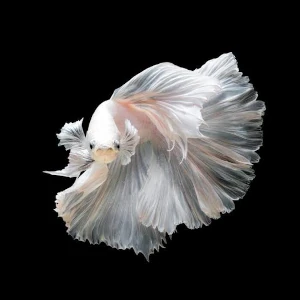

Nome principal
Peixe Betta
Peixe Betta, Betta, Peixe de Briga Siamês, Siamese Fighting Fish
Ficha de peixe
Anabantídeos e Labirintídeos
Um dos peixes ornamentais mais icônicos e inteligentes do mundo, conhecido por sua personalidade marcante e beleza exuberante.

Nome principal
Peixe Betta, Betta, Peixe de Briga Siamês, Siamese Fighting Fish
Nome científico
Nome técnico essencial para taxonomia, cruzamento de manejo e referência editorial consistente.
Dificuldade de manejo
Use este nível como referência inicial, sempre considerando volume, estabilidade e compatibilidade do aquário.
Seções 4 a 6
Peixe Betta tem hábito alimentar carnívoro. Excelente. 1 a 2 vezes ao dia em pequenas porções. Por ter boca voltada para cima, prefere rações granuladas flutuantes específicas para Bettas, complementadas com artêmias, dáfnias e bloodworms.

Alimento completo flutuante em microgrânulos com prebióticos, spirulina e astaxantina para saúde e cores vibrantes de Bettas.

Alimento completo flutuante em microgrânulos com alho, astaxantina e vitamina C para saúde, crescimento e cores de Bettas.

Ração super premium em mini pellets para Bettas, sem transgênicos. Com proteínas marinhas nobres, alho e prebióticos, garante excelente digestibilidade, alta imunidade e cores naturais.

Petisco proteico natural complementar em cubos de tubifex liofilizado, sem conservantes, para peixes ornamentais onívoros e carnívoros.

Alimento natural complementar em cubos de tubifex liofilizado rico em proteínas para peixes ornamentais onívoros e carnívoros.

Alimento natural complementar em larvas de mosquito liofilizadas rico em proteínas e vitaminas para peixes ornamentais de água doce.

Alimento natural complementar em cubos de artêmia liofilizada rico em proteínas e carotenoides para peixes onívoros e carnívoros.

Alimento natural complementar em dáfnias liofilizadas rico em fibras e nutrientes para auxiliar na digestão de peixes ornamentais.

Alimento natural complementar em cubos de artêmia salina liofilizada rico em proteínas e carotenoides para peixes onívoros e carnívoros.
Machos possuem nadadeiras muito longas e vistosas e corpo mais esguio; fêmeas têm nadadeiras curtas, corpo mais roliço e um ponto branco visível no ventre (ovopositor). Tipo de reprodução: Ovíparo. Dificuldade de reprodução: Intermediário. O macho constrói um ninho de bolhas na superfície e cuida sozinho dos ovos e dos alevinos recém-eclodidos, devendo-se retirar a fêmea logo após a desova.
Alta. Substrato recomendado: Substrato escuro ou areia fina com plantas naturais de folhas largas para descanso. Necessidade de esconderijos: Média. Aprecia aquários plantados com plantas flutuantes, iluminação suave e filtragem com fluxo bastante reduzido para não cansar suas longas nadadeiras.
Seção 2
Seção 1
Seção 7
Possui o órgão labirinto que permite respirar ar atmosférico na superfície, mas ainda exige aquário filtrado, ciclado e aquecido.
Seção 8
Sim, embora respire ar na superfície pelo órgão labirinto, ele é um peixe tropical que precisa de água limpa, filtrada sem correnteza forte e aquecida entre 24°C e 30°C.
O mínimo recomendado para garantir bem-estar, nado saudável e estabilidade dos parâmetros é um aquário de 20 litros.
Jamais; dois machos brigarão até a morte por território.